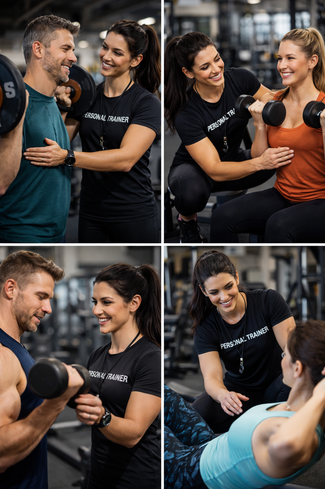
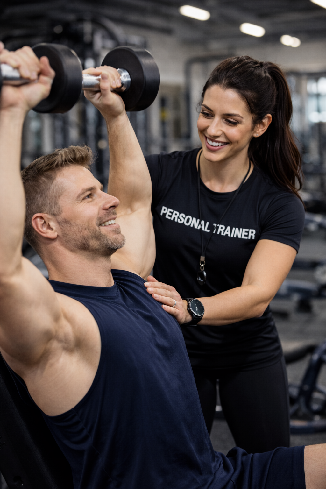
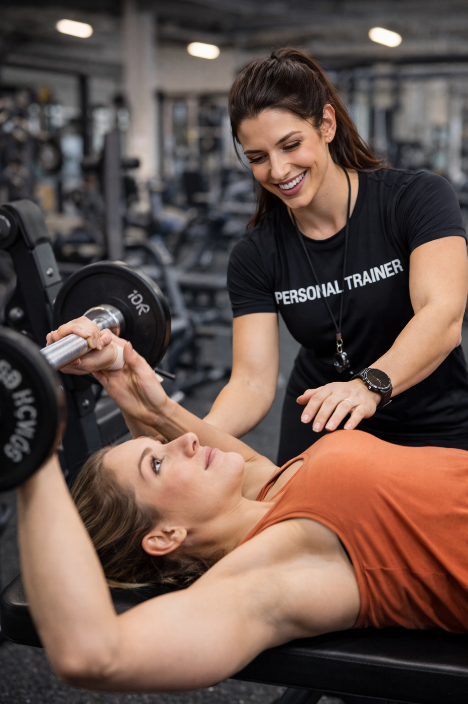

Especialista em Transformação Física e Alta Performance
Com mais de 8 anos de atuação profissional, desenvolvo programas de treinamento personalizados com foco em saúde, disciplina, performance e resultados sustentáveis.
Agendar AvaliaçãoSobre o Profissional
Graduado em Educação Física – Bacharelado, com especializações em Treinamento Funcional, Hipertrofia e Emagrecimento. Ao longo da trajetória profissional, acompanhei atletas e alunos do público geral na conquista de resultados consistentes, sempre priorizando planejamento estratégico e segurança.
Minha metodologia é baseada em acompanhamento contínuo, análise de evolução e ajustes personalizados, respeitando a individualidade biológica de cada aluno.
Diferenciais
Em Ação


